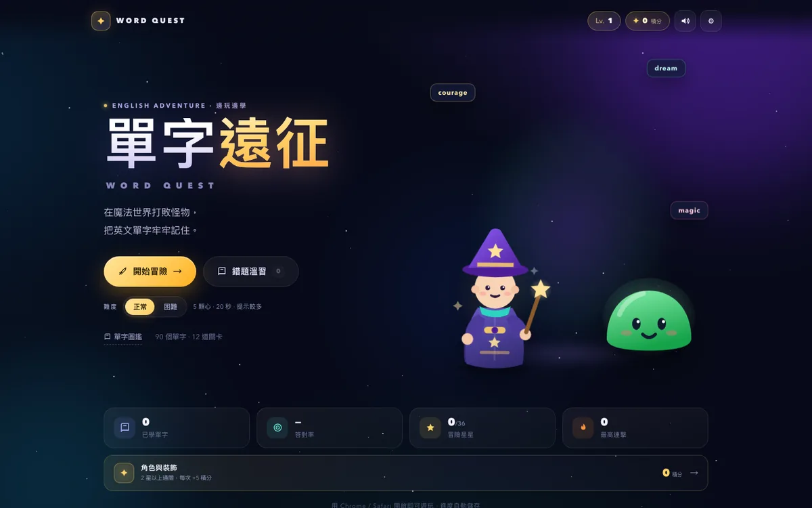
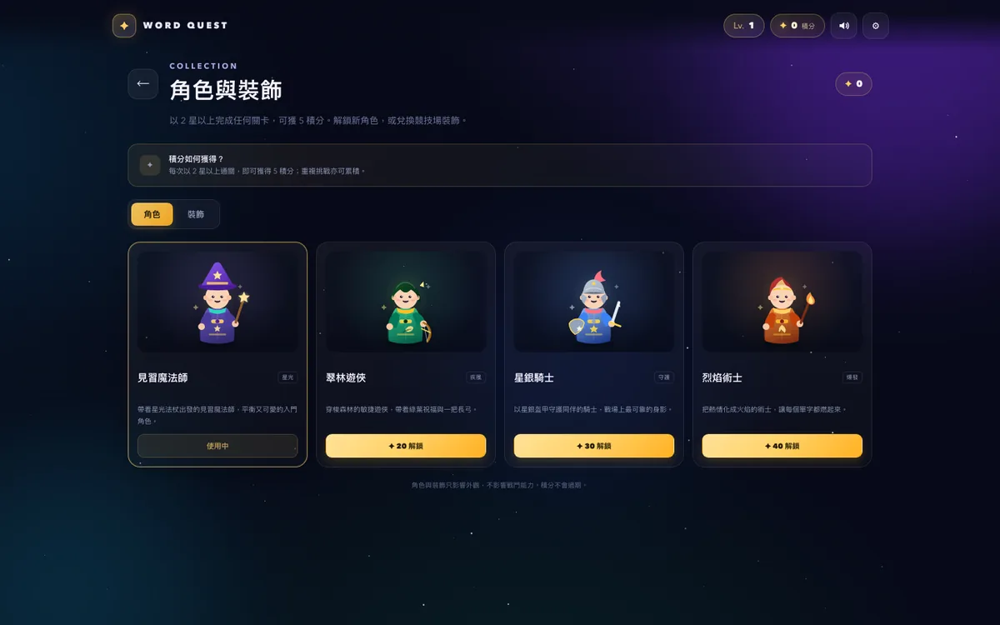

讀完就忘？
主動答題比被動重讀更能鞏固記憶。每次答錯，都會立即看到正確答案與例句。
1A Ethan Hau & 1A Hailey Ho 作品
《單字遠征》是一款結合 RPG 戰鬥與英文學習的網頁遊戲。用答題攻擊怪物，在 3 個世界、12 道關卡中，把 90 個單字真正記進腦海。
完全免費遊玩 · 無廣告 · 無需註冊

正常 / 困難模式WHY WORD QUEST
傳統默書式溫習，很容易讀完就忘。Word Quest 把每一次練習變成有即時回饋的挑戰，讓你真正記住單字，而不是短暫認得。
主動答題比被動重讀更能鞏固記憶。每次答錯，都會立即看到正確答案與例句。
用血量、連擊、星星與等級，把每天 10 分鐘的溫習變成一件期待的事。
錯題會自動進入溫習本；已掌握的字會減少出現，把時間留給真正需要練習的單字。
不是為了玩而玩，而是讓每一次點擊，都變成一次記憶練習。
FEATURES
從答題、回饋到複習，每個細節都圍繞着同一個目標：讓你記得住，也用得到。
答對就攻擊，答錯會扣血。把單字練習變成有輸贏、有節奏的戰鬥。
每次答錯，立即顯示正確單字、中文意思與雙語例句，不讓錯誤白白過去。
錯題自動收集，溫習時優先出現；答對後移除，讓複習更有針對性。
內建英文朗讀與聽力題，練習不只看懂，也聽得懂、讀得出來。
收錄全部單字、詞性、例句與熟練度；可搜尋、可按主題瀏覽。
正常模式輕鬆建立習慣，困難模式挑戰反應與拼字；獎勵亦會提升。
由魔法森林出發，通過關卡解鎖星辰沙漠與巨龍山脈。
在限時內選出正確答案或拼出單字，連擊愈高，傷害愈大。
收集星星與 XP，錯題自動進入溫習本，下一次變得更強。
WORLDS
由日常基礎到抽象概念，難度層層遞進。每個世界都有 30 個單字與一位守護者。
動物、顏色、家庭與日常動作，打好英文基礎。
守護者史萊姆王
天氣、旅遊、興趣與生活英文，把單字帶進日常。
守護者沙暴巨靈
環境、科技、情感與抽象概念，挑戰更有深度的單字。
守護者遠古巨龍
INSIDE THE GAME
即時戰鬥、單字圖鑑與成績結算，全部在同一個網頁遊戲裏。
LEARNING DESIGN
我們把四個有效的學習原則，藏進了遊戲循環裏。
先作答，再看答案。強迫大腦提取記憶，比重讀更有效。
每次作答後立即獲得對錯、正確答案與例句，修正錯誤。
錯題優先重現，已掌握的字減少出現，把時間用在刀口上。
心數、連擊、星星與等級，讓練習有即時目標與成就感。
適合小學至初中程度的英文學習者，也適合想重新打好基礎的成年人。
DIFFICULTY
想輕鬆建立習慣，還是來一場硬仗？隨時切換，進度共用。
節奏較寬裕，適合第一次接觸，或每天輕鬆溫習。
節奏更快、題型更狠，適合想突破自己的你。
可在遊戲首頁或設定切換；戰鬥中切換會於下一場生效。
REWARDS
以 2 星以上完成任何關卡，可獲 5 積分。用積分解鎖全新角色，或兌換競技場裝飾，打造屬於你的遠征隊。
角色與裝飾只影響外觀，不影響戰鬥數值。重複挑戰亦可累積積分。
開始收集
NEW · 角色與裝飾THE CREATORS
Word Quest 由 1A Ethan Hau 與 1A Hailey Ho 構思與製作，希望把英文溫習變成一件更有趣、更有成就感的事。
這是一個以學習為本的校園專案。歡迎把遊戲分享給同學，一起挑戰更高分。
在 GitHub 查看專案共同創作者 · 1A 班
共同創作者 · 1A 班
90 個英文單字 · 3 個世界 · 12 道冒險關卡
不需要。Word Quest 是一個網頁遊戲，用手機或電腦瀏覽器打開即可遊玩，亦不需要建立帳號。
是。全部 90 個單字、3 個世界與 12 道關卡均可免費遊玩，沒有廣告或付費牆。
單字涵蓋小學至初中基礎，適合約 8 歲以上的英文學習者；成年人想溫習基礎單字也適合。
會。等級、星星、錯題與單字熟練度會儲存在你目前使用的瀏覽器。更換裝置或清除網站資料後不會同步。
聽力題使用瀏覽器的英文語音功能，請確認裝置音量與網站音效已開啟。關閉遊戲音效時，系統不會發出聽力題。
可以。在遊戲首頁或設定中切換正常／困難模式；若在戰鬥中切換，會在下一場生效。
網站提供繁體中文、简体中文及 English 介面；遊戲本身以繁體中文呈現，學習內容為英文單字與中文解釋。
可以。遊戲已針對手機、平板與桌面瀏覽器調整版面；建議使用最新版 Chrome、Edge 或 Safari。
每次以 2 星以上完成關卡可獲 5 積分；在角色與裝飾商店可用積分解鎖 3 個新角色及 5 款競技場裝飾（另設 1 款預設主題）。
READY TO PLAY?
免費、免註冊，打開瀏覽器就能開始。下一個被你記住的單字，就在這裏。
由 1A Ethan Hau 與 1A Hailey Ho 製作